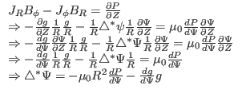

Next, consider the force balance in
direction. The  component of the force balance equation (43) is written
component of the force balance equation (43) is written
 |
(49) |
Using the expressions of the current density and magnetic field [Eqs.
(5), (38), and (41)], equation
(49) is written
Using the fact that  and
and  are a function of only
are a function of only  , i.e.,
, i.e.,
 and
and
 , Eq. (50) is written
, Eq. (50) is written
which can be simplified to
i.e.,
 |
(53) |
Equation (53) is known as Grad-Shafranov (GS) equation.
[Note that the  component of the force balance equation is written
component of the force balance equation is written

which turns out to be identical with the Grad-Shafranov equation. This is not
a coincidence. The reason is that the force balance equation has been
satisfied in three different directions, namely, in the
 ,
, and
,
, and
 direction, and
thus it must be satisfied in all directions.]
direction, and
thus it must be satisfied in all directions.]
yj
2018-03-09